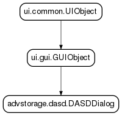

pyanaconda.ui.gui.spokes.advstorage package¶
Submodules¶
pyanaconda.ui.gui.spokes.advstorage.dasd module¶
- class pyanaconda.ui.gui.spokes.advstorage.dasd.DASDDialog(data, storage)¶
Bases: pyanaconda.ui.gui.GUIObject
- Gtk dialog which allows users to manually add DASD devices without
- having previously specified them in a parm file.

- builderObjects = ['dasdDialog']¶
- mainWidgetName = 'dasdDialog'¶
- on_device_entry_activate(entry, user_data=None)¶
- on_start_clicked(*args)¶
Go through the process of validating entry contents and then attempt to add the device.
- refresh()¶
- run()¶
- uiFile = 'spokes/advstorage/dasd.glade'¶
pyanaconda.ui.gui.spokes.advstorage.fcoe module¶

pyanaconda.ui.gui.spokes.advstorage.iscsi module¶
- class pyanaconda.ui.gui.spokes.advstorage.iscsi.ISCSIDialog(data, storage)¶
Bases: pyanaconda.ui.gui.GUIObject

- builderObjects = ['iscsiDialog', 'nodeStore', 'nodeStoreFiltered']¶
- mainWidgetName = 'iscsiDialog'¶
- on_auth_type_changed(widget, *args)¶
- on_discover_entry_activated(*args)¶
- on_discover_field_changed(*args)¶
- on_login_clicked(*args)¶
- on_login_entry_activated(*args)¶
- on_login_field_changed(*args)¶
- on_login_type_changed(widget, *args)¶
- on_row_toggled(button, path)¶
- on_start_clicked(*args)¶
- refresh()¶
- run()¶
- selectedNames¶
- uiFile = 'spokes/advstorage/iscsi.glade'¶
pyanaconda.ui.gui.spokes.advstorage.zfcp module¶
- class pyanaconda.ui.gui.spokes.advstorage.zfcp.ZFCPDialog(data, storage)¶
Bases: pyanaconda.ui.gui.GUIObject
- Gtk dialog which allows users to manually add zFCP devices without
- having previously specified them in a parm file.

- builderObjects = ['zfcpDialog']¶
- mainWidgetName = 'zfcpDialog'¶
- on_entry_activated(entry, user_data=None)¶
- on_start_clicked(*args)¶
Go through the process of validating entry contents and then attempt to add the device.
- refresh()¶
- run()¶
- uiFile = 'spokes/advstorage/zfcp.glade'¶